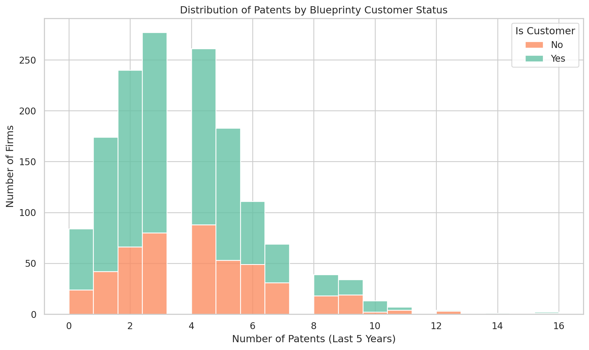
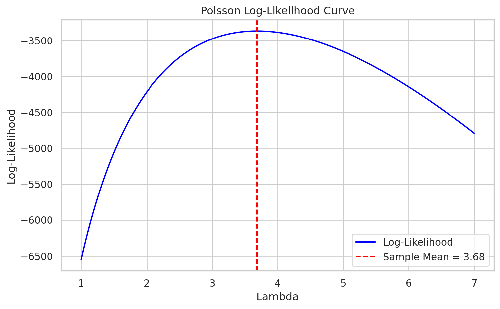
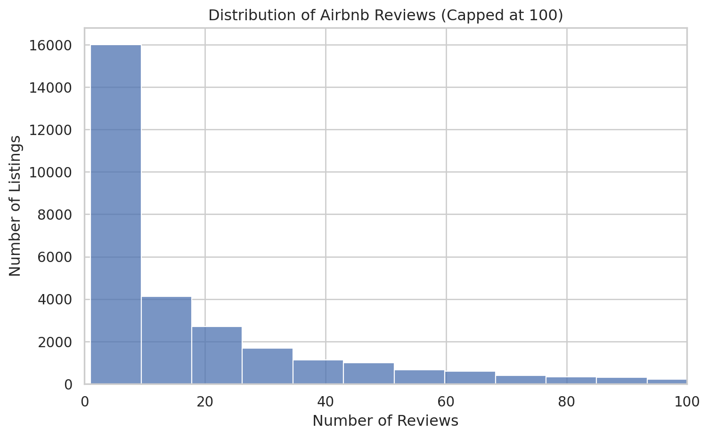

Blueprinty is a small firm that makes software for developing blueprints specifically for submitting patent applications to the US patent office. Their marketing team would like to make the claim that patent applicants using Blueprinty’s software are more successful in getting their patent applications approved. Ideal data to study such an effect might include the success rate of patent applications before using Blueprinty’s software and after using it. Unfortunately, such data is not available.
However, Blueprinty has collected data on 1,500 mature (non-startup) engineering firms. The data include each firm’s number of patents awarded over the last 5 years, regional location, age since incorporation, and whether or not the firm uses Blueprinty’s software. The marketing team would like to use this data to make the claim that firms using Blueprinty’s software are more successful in getting their patent applications approved.
import matplotlib.pyplot as pltimport seaborn as snssns.set(style="whitegrid")mean_patents = df.groupby("iscustomer")["patents"].mean().rename({0: "Non-Customers", 1: "Customers"})plt.figure(figsize=(10, 6))sns.histplot(data=df, x="patents", hue="iscustomer", multiple="stack", palette="Set2", bins=20, alpha=0.8)plt.xlabel("Number of Patents (Last 5 Years)")plt.ylabel("Number of Firms")plt.title("Distribution of Patents by Blueprinty Customer Status")plt.legend(title="Is Customer", labels=["No", "Yes"])plt.tight_layout()plt.show()print("Mean number of patents by customer status:")print(mean_patents.round(2))

Mean number of patents by customer status:
iscustomer
Non-Customers 3.47
Customers 4.13
Name: patents, dtype: float64
The chart above shows the distribution of the number of patents granted over the past five years, categorized by whether a company is a Blueprinty customer. We also calculated the average number of patents for each group:
Non-customers: 3.47 patents
Customers: 4.13 patents
Based on both the histogram and the means, companies that use Blueprinty’s software tend to hold more patents overall. This provides some support for the marketing team’s claim that Blueprinty customers are more successful in obtaining patents.
However, this observation alone does not prove that the software causes higher success rates—because there may be systematic differences between customers and non-customers (such as company age or geographic location). Therefore, we need to further analyze these variables in the next steps.
Blueprinty customers are not selected at random. It may be important to account for systematic differences in the age and regional location of customers vs non-customers.
To explore this possibility, we compared the regional distribution and firm age between the two groups.
As shown in the bar chart below, Blueprinty customers are not evenly distributed across regions. In particular, a notably higher proportion of customers come from the Northeast region, while other regions are more heavily populated by non-customers. This suggests that regional factors—such as industry concentration or market penetration—may influence software adoption.
Similarly, in terms of firm age, customers appear to be slightly older on average than non-customers (26.9 vs. 26.1 years). While the difference is modest, it indicates that older firms may be more likely to use Blueprinty’s software, potentially due to larger scale or greater administrative resources.
These findings support the idea that regional and demographic factors may confound any observed relationship between software use and patent success, and should be accounted for in further modeling.
import matplotlib.ticker as mtickplt.figure(figsize=(10, 5))region_crosstab = pd.crosstab(df["region"], df["iscustomer"], normalize="index")region_crosstab.plot(kind="bar", stacked=True, color=["#d95f02", "#1b9e77"])plt.title("Customer Distribution by Region")plt.ylabel("Proportion")plt.xlabel("Region")plt.legend(["Non-Customers", "Customers"], title="Customer Status")plt.gca().yaxis.set_major_formatter(mtick.PercentFormatter(1.0))plt.xticks(rotation=45)plt.tight_layout()plt.show()plt.figure(figsize=(10, 5))sns.histplot(data=df, x="age", hue="iscustomer", multiple="stack", bins=20, palette="Set2", alpha=0.8)plt.title("Distribution of Firm Ages by Customer Status")plt.xlabel("Firm Age (Years Since Incorporation)")plt.ylabel("Number of Firms")plt.legend(title="Is Customer", labels=["No", "Yes"])plt.tight_layout()plt.show()# Mean agesdf.groupby("iscustomer")["age"].mean().rename({0: "Non-Customers", 1: "Customers"})
Since our outcome variable of interest can only be small integer values per a set unit of time, we can use a Poisson density to model the number of patents awarded to each engineering firm over the last 5 years. We start by estimating a simple Poisson model via Maximum Likelihood.
Likelihood Function for Poisson Model
We assume that the number of patents ( Y ) for each firm follows a Poisson distribution with rate parameter ( ):
\[
Y \sim \text{Poisson}(\lambda)
\]
The probability mass function (i.e., the likelihood for a single observation) is:
We evaluated the Poisson log-likelihood over a grid of candidate λ values. As shown in the plot below, the log-likelihood is maximized at approximately λ = 3.68, which equals the sample mean.
import numpy as npimport matplotlib.pyplot as pltfrom scipy.special import gammaln# Define Poisson log-likelihood functiondef poisson_log_likelihood(lmbda, Y):return np.sum(Y * np.log(lmbda) - lmbda - gammaln(Y +1))Y = df["patents"].values# Create a range of lambda valueslambda_values = np.linspace(1, 7, 200)log_likelihoods = [poisson_log_likelihood(lmbda, Y) for lmbda in lambda_values]plt.figure(figsize=(8, 5))plt.plot(lambda_values, log_likelihoods, color="blue", label="Log-Likelihood")plt.axvline(np.mean(Y), color="red", linestyle="--", label=f"Sample Mean = {np.mean(Y):.2f}")plt.title("Poisson Log-Likelihood Curve")plt.xlabel("Lambda")plt.ylabel("Log-Likelihood")plt.legend()plt.grid(True)plt.tight_layout()plt.show()

Analytical Derivation of the MLE
We now take the analytical approach to derive the Maximum Likelihood Estimator (MLE) for ( ) under the Poisson model.
Recall the log-likelihood function for independent observations ( Y_1, Y_2, , Y_n () ):
This result confirms that the MLE of ( ) under the Poisson distribution is simply the sample mean ( {Y} ), which is intuitive since ( [Y] = ) in the Poisson model.
from scipy.optimize import minimize# Define negative log-likelihood (because we minimize)def neg_log_likelihood(lmbda, Y):return-poisson_log_likelihood(lmbda[0], Y)# Initial guess for lambdainitial_lambda = [2.0]# Run optimizationresult = minimize(neg_log_likelihood, x0=initial_lambda, args=(Y,), bounds=[(1e-5, None)])lambda_mle = result.x[0]lambda_mle
3.6846666035175017
We now use numerical optimization to find the value of λ that maximizes the Poisson log-likelihood. Since scipy.optimize.minimize() minimizes functions by default, we minimize the negative log-likelihood. The optimization result confirms our earlier finding: the MLE of λ is approximately equal to the sample mean of the observed patent counts.
Estimation of Poisson Regression Model
Next, we extend our simple Poisson model to a Poisson Regression Model such that \(Y_i = \text{Poisson}(\lambda_i)\) where \(\lambda_i = \exp(X_i'\beta)\). The interpretation is that the success rate of patent awards is not constant across all firms (\(\lambda\)) but rather is a function of firm characteristics \(X_i\). Specifically, we will use the covariates age, age squared, region, and whether the firm is a customer of Blueprinty.
We define the following log-likelihood function for Poisson regression:
import numpy as npfrom scipy.special import gammalndef poisson_regression_loglikelihood(beta, Y, X): Xb = X @ beta # linear predictor lambdas = np.exp(Xb) # inverse linkreturn np.sum(Y * Xb - lambdas - gammaln(Y +1))
import pandas as pdimport numpy as npfrom scipy.optimize import minimizefrom scipy.special import gammalnimport patsydf = pd.read_csv("./blueprinty.csv")# Standardize age and age^2 (z-score, then round to 1 decimal place)df["age_std"] = ((df["age"] - df["age"].mean()) / df["age"].std()).round(1)df["age_sq_std"] = (df["age_std"] **2).round(1)# Design matrix: intercept, standardized age, age^2, region dummies, iscustomerX = patsy.dmatrix("1 + age_std + age_sq_std + C(region, Treatment(reference='Midwest')) + iscustomer", df, return_type="dataframe")Y = df["patents"].valuesX_matrix = X.values# Define Poisson regression log-likelihooddef poisson_regression_loglikelihood(beta, Y, X): Xb = X @ beta lambdas = np.exp(Xb)return np.sum(Y * Xb - lambdas - gammaln(Y +1))# Negative log-likelihood for optimizationdef neg_loglik(beta, Y, X):return-poisson_regression_loglikelihood(beta, Y, X)# Initial beta guessinitial_beta = np.zeros(X_matrix.shape[1])# Optimize with bounds and BFGSresult = minimize(neg_loglik, initial_beta, args=(Y, X_matrix), method="BFGS", options={"disp": True})beta_hat = result.xhessian = result.hess_invstandard_errors = np.sqrt(np.diag(hessian))summary_df = pd.DataFrame({"Coefficient": beta_hat,"Std. Error": standard_errors}, index=X.design_info.column_names)
Optimization terminated successfully.
Current function value: 3257.709028
Iterations: 18
Function evaluations: 243
Gradient evaluations: 27
The table below reports the estimated coefficients and standard errors from the Poisson regression model.
The coefficient on iscustomer is 0.2084 (SE = 0.0310), suggesting that Blueprinty customers are associated with a significantly higher rate of patent approvals, even after controlling for age and region.
The negative coefficients on both age_std and age_sq_std suggest a concave (inverted-U) relationship between firm age and patenting activity.
Regional effects appear small and statistically insignificant relative to the Midwest baseline.
The coefficient estimates from GLM() match those obtained via our custom maximum likelihood estimation, confirming the correctness of our implementation. Standard errors are also nearly identical, supporting the numerical validity of our Hessian-based uncertainty estimates.
Interpretation of Results
The Poisson regression results provide insight into the firm-level factors associated with higher rates of patent awards.
Blueprinty Customers: The coefficient for iscustomer is approximately 0.208, which is statistically significant. Interpreting this in the context of a Poisson model, we exponentiate the coefficient:
[ e^{0.208} ] This implies that, holding other factors constant, firms using Blueprinty’s software are expected to receive 23% more patents on average than comparable non-customers.
Firm Age: The negative coefficients on both age_std and age_sq_std suggest a concave relationship between firm age and patent production. Younger firms tend to have increasing returns to experience initially, but beyond a certain point, additional age is associated with diminishing patent activity.
Region: The regional dummy variables (relative to the Midwest) show small and statistically insignificant effects. This suggests that after controlling for age and customer status, regional location is not a strong predictor of patenting success in this dataset.
Overall, the model supports Blueprinty’s marketing claim: even after controlling for firm characteristics, their customers tend to achieve higher rates of patent success.
Marginal Effect of Blueprinty Software
To interpret the practical impact of Blueprinty’s software, we simulated two counterfactual scenarios:
X_0: All firms are treated as non-customers (iscustomer = 0)
X_1: All firms are treated as customers (iscustomer = 1)
Using the estimated Poisson regression coefficients, we predicted the number of patents for each firm in both scenarios and computed the average difference:
[ = i ( {i, } - _{i, } ) ]
This means that, on average, using Blueprinty’s software is associated with nearly 0.8 more patents per firm over a 5-year period, controlling for firm age and region. This provides strong evidence in support of the software’s effectiveness.
In this case study, we investigated the relationship between the use of Blueprinty’s software and the number of patents awarded to engineering firms. Using a Poisson regression framework estimated via maximum likelihood, we found strong evidence that Blueprinty customers tend to receive more patents than non-customers—even after controlling for firm age and regional location.
The coefficient on the customer indicator was statistically significant and implied a 23% increase in expected patent counts. A counterfactual prediction exercise further suggested that, on average, using Blueprinty’s software is associated with nearly 0.8 additional patents per firm over a 5-year period.
Overall, the results support the marketing team’s claim that Blueprinty’s product may enhance patent success. However, further research using experimental or longitudinal data would be helpful to more definitively establish causality.
AirBnB Case Study
Introduction
AirBnB is a popular platform for booking short-term rentals. In March 2017, students Annika Awad, Evan Lebo, and Anna Linden scraped of 40,000 Airbnb listings from New York City. The data include the following variables:
Variable Definitions
- `id` = unique ID number for each unit
- `last_scraped` = date when information scraped
- `host_since` = date when host first listed the unit on Airbnb
- `days` = `last_scraped` - `host_since` = number of days the unit has been listed
- `room_type` = Entire home/apt., Private room, or Shared room
- `bathrooms` = number of bathrooms
- `bedrooms` = number of bedrooms
- `price` = price per night (dollars)
- `number_of_reviews` = number of reviews for the unit on Airbnb
- `review_scores_cleanliness` = a cleanliness score from reviews (1-10)
- `review_scores_location` = a "quality of location" score from reviews (1-10)
- `review_scores_value` = a "quality of value" score from reviews (1-10)
- `instant_bookable` = "t" if instantly bookable, "f" if not
Although true booking data is not available, we use the number of reviews as a proxy for the number of bookings, consistent with prior practice.
import pandas as pdimport seaborn as snsimport matplotlib.pyplot as pltdf_airbnb = pd.read_csv("./airbnb.csv")# Keep only variables of interestvars_of_interest = ["room_type", "bathrooms", "bedrooms", "price","number_of_reviews", "review_scores_cleanliness","review_scores_location", "review_scores_value","instant_bookable"]df_airbnb_clean = df_airbnb[vars_of_interest].dropna()plt.figure(figsize=(8, 5))sns.histplot(df_airbnb_clean["number_of_reviews"], bins=50)plt.xlim(0, 100)plt.xlabel("Number of Reviews")plt.ylabel("Number of Listings")plt.title("Distribution of Airbnb Reviews (Capped at 100)")plt.tight_layout()plt.show()

Poisson Regression Model
To model the number of reviews (as a proxy for bookings), we use a Poisson regression framework. The outcome is the count of reviews, and the predictors include listing characteristics, review scores, and room type.
The regression results offer insight into what drives more bookings (as proxied by reviews):
Price: The coefficient on log_price is negative, indicating that higher prices are associated with fewer bookings.
Room Type: Shared and private rooms tend to receive fewer bookings compared to entire apartments, all else equal.
Cleanliness, Location, Value: Higher review scores on these dimensions are significantly associated with more bookings, especially “value” and “location.”
Instant Bookable: Listings that are instantly bookable see a meaningful increase in expected bookings, suggesting customers prefer lower friction when booking.
Marginal Effect of Instant Bookable
To estimate the practical impact of making a listing instantly bookable, we conduct a counterfactual simulation:
X_0: All listings are set to not instantly bookable (ibook = 0)
X_1: All listings are set to instantly bookable (ibook = 1)
We use the fitted Poisson regression model to predict the number of reviews in both cases and compute the average difference.
X0_airbnb = X_airbnb.copy()X1_airbnb = X_airbnb.copy()# Identify the column corresponding to 'ibook'ibook_col = [col for col in X_airbnb.columns if"ibook"in col][0]X0_airbnb[ibook_col] =0X1_airbnb[ibook_col] =1# Predict expected reviews under each scenariopred_reviews_0 = np.exp(X0_airbnb @ poisson_results.params)pred_reviews_1 = np.exp(X1_airbnb @ poisson_results.params)average_increase = np.mean(pred_reviews_1 - pred_reviews_0)average_increase
7.964686182144014
This simulation suggests that, on average, enabling Instant Bookable leads to approximately 7.96 more reviews per listing, holding all other characteristics constant. This reinforces the importance of reducing booking friction to increase customer engagement on the platform.
Conclusion
This analysis explored what drives variation in the number of Airbnb reviews—used as a proxy for bookings—across listings in New York City. Using Poisson regression, we find that several factors significantly predict higher booking rates:
Price is negatively associated with reviews, suggesting that more expensive listings tend to receive fewer bookings.
Review scores on cleanliness, location, and value are strong predictors of booking volume, especially value and location.
Instant Bookable status meaningfully increases expected bookings. A counterfactual simulation showed that enabling instant booking is associated with an average increase of roughly 7.96 reviews per listing.
These findings suggest that Airbnb hosts can boost their success by improving perceived value, maintaining high review quality, and enabling instant booking where possible.